Voice Feminization for MTF: Practice Handbook
By Aoi
First edition: July 2021 | Second edition: May 2026
English translation by 晴れ猫🏳️⚧️🍥
Contents
Introduction
Background Knowledge
- 1. Human Vocal Anatomy and Physiology
- 2. An Overview of Voice Acoustics
- 3. From Tubes to the Vocal Tract: How Do Formants “Take Shape”? (New)
Gender Perception of the Voice
- 1. Formant Characteristics of Vowels
- 2. Gender Differences in Mandarin Vowel Formants: Data (New)
- 3. Factors Associated with Gender Perception
Using Praat to Support Voice Practice
Practical Exercises for Different Voice Features
- 1. Raising F0
- 2. Raising F2 (High-Larynx Training)
- 3. Raising F1
- 4. Other Modifying Factors
Introduction
Why Practice Voice Feminization?
Before we begin any exercises or explanations, it is worth clarifying one question first: Why practice voice feminization? In the author's view, voice feminization is not a qualification or obligation for MTF people. In fact, there is no mysterious, essential “female voice” (as the following discussion will make clearer). Rather, certain types of human voices have been conventionally grouped together as having “female-gender characteristics.” Ultimately, the voice is simply a tool people use in social interaction. To some extent, voice feminization can help MTF people be recognized as women, making it easier to participate in everyday social life, align self-identity with how others perceive them, improve social interactions, and enhance quality of life. But none of this means that only people who can produce voices with female-gender characteristics can be recognized as women. That idea excludes not only transgender women, but also many cisgender women whose vocal characteristics differ from what is stereotypically considered “female.”
Avoiding Common Training Pitfalls
There are already many voice-feminization guides, videos, and other resources in the MTF community, but their quality varies widely. High-quality resources are especially scarce in Chinese-speaking MTF communities, so many people turn to entertainment-focused tutorials on “feminine voice imitation” for guidance. These videos have several major problems, including:
- outdated or confused theoretical foundations, with an overreliance on singing techniques
- vague and unscientific concepts, such as “chest resonance,” “pharyngeal resonance,” “head resonance,” and “vocal fry”
- no objective criteria for comparing progress
- limited training methods that rely heavily on intuition or “natural talent”
In fact, voice feminization can be explained in scientific and precise terms. With knowledge of voice acoustics, we can identify which vocal features help listeners distinguish gender, which measurable audio values correspond to those features, and which physiological and anatomical structures influence those values. Meanwhile, established vocal-training techniques offer many ways to practice controlling and changing the body structures involved in phonation, helping you work toward a more feminine voice.
Remember our two foundations: voice acoustics and vocal technique.
With this background, it becomes clear that voice-feminization training does not depend on mysterious abilities such as talent or intuition. Like learning any other subject, it involves building a framework of knowledge about voice acoustics, practicing consistently with vocal-training methods, and then reflecting on and analyzing your results in light of what you have learned. Please do not skip the knowledge-building stage and jump straight into practice. Without a framework to help you analyze your voice and evaluate your progress, your practice can easily become aimless struggle. Keep this in mind.
There is another important point to remember: Building a knowledge framework for voice practice does not mean treating training like schoolwork.
Voice feminization is something you can learn, but learning does not have to feel like the heavy, exam-driven coursework many people experienced at school. If you cannot find any enjoyment in practicing, the journey will be much harder. Voice feminization practice should feel more like learning to talk as a toddler or imitating different voices while playing with friends—talking like a robot, copying an animated character, or pretending to be an elderly person during make-believe. What you need is that same sense of playful exploration.
Relax. Remember, your voice is a treasure left to you by your childhood. You need to be playful enough to discover how to open the treasure chest. Do not be afraid of embarrassing yourself or making silly, ridiculous noises, and do not feel you must act mature. Play with your voice like a child. The more wholeheartedly you play, the more you will discover.
Background Knowledge
1. Human Vocal Anatomy and Physiology
1. Structure of the Vocal Tract
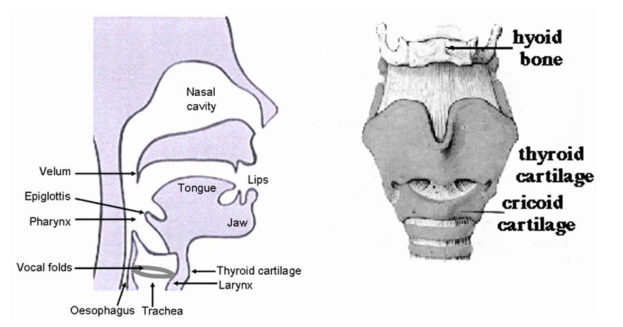
Vocal folds: The vocal folds are two pale bands of tissue made up of ligaments, the muscles that tension them, and the mucous membrane that covers them. They open during breathing and come together during phonation. Air travels from the lungs up through the trachea and strikes the closed vocal folds, causing them to vibrate and produce a sound with an oscillating waveform.
Imagine an electric air pump: the pump is your lungs, the glottis is its nozzle, and the vocal folds are like a small piece of paper you hang across the nozzle to partly block it. When the pump blows air, the paper flutters and makes a sound.
Pharynx: In a broad sense, this term refers to the cavities above the glottis, including the nasal cavity, oral cavity, and laryngopharynx. More narrowly, it refers to the lower pharynx, or laryngopharynx: the space between the epiglottis and the vocal folds, and the first cavity air passes through after the vocal folds begin vibrating.
Epiglottis: A piece of cartilage above the vocal folds. During breathing and phonation, it tilts upward to open the laryngeal passage so air can flow through. During swallowing, it tilts downward to help keep food and liquid out of the trachea. The degree to which it tilts can also affect vocal timbre to some extent.
Larynx: The anatomical structure that includes the vocal folds, thyroid cartilage, and cricoid cartilage.
Velum or soft palate: The rear third of the roof of the mouth, forming the opening between the oral and nasal cavities. It consists mainly of muscle, tendon, and mucous membrane and can move. When relaxed, it can allow the oral and nasal cavities to communicate; when raised, it can close off the nasal passage.
Tongue: The tongue can be divided into the tip, body, and root. The root connects to the epiglottis via the vallecula, and the tip and root can move relatively independently. Moving the tongue forward or backward, or raising and lowering it, can change vocal timbre.
Hyoid bone: A U-shaped bone above the larynx. It supports the larynx from above and is attached to the mandible by muscles and tendons. Movement of the hyoid and its associated muscles is important for elevating the larynx during swallowing and speaking.
Thyroid cartilage, commonly associated with the Adam’s apple: The main part of the front wall of the larynx. It lies above the thyroid gland and protects the vocal folds behind it. Changes in the relative angle between the thyroid and cricoid cartilages can change pitch.
Cricoid cartilage: The lower part of the larynx includes a ring-shaped piece of cartilage called the cricoid cartilage. Most of the ring lies toward the back. The tracheal rings lie below it.
2. Muscles Involved in Phonation
Laryngeal movement is controlled by two groups of muscles. The muscles inside the larynx that move the vocal folds are called the intrinsic laryngeal muscles; another group, the extrinsic laryngeal muscles, controls the larynx’s position in the neck.
Extrinsic laryngeal muscles—the larynx’s “elevator and lowering system”
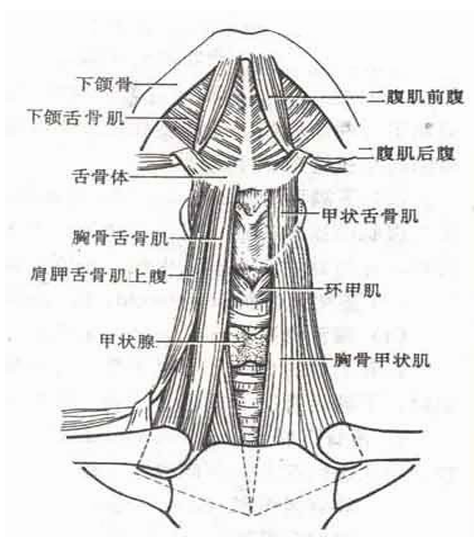
The extrinsic laryngeal muscles are also called the suprahyoid and infrahyoid muscle groups. They are classified by their position relative to the body of the hyoid bone: muscles above it are the suprahyoid muscles, and those below it are the infrahyoid muscles.
There is an especially important point here that many tutorials get wrong or oversimplify: Elevating the Adam’s apple (thyroid cartilage) is not the work of a single muscle group; it is a precise, coordinated three-step process.
Imagine three key points in your neck, arranged from top to bottom:
- Anchor Point A: The base of the skull and the mandible (a firm, stable base)
- Transfer Point B: The hyoid bone (the only “floating bone” in the neck that is not directly connected to another bone)
- Load C: The thyroid cartilage / Adam’s apple (the “sound-source chamber” containing the vocal folds, suspended beneath the hyoid by the thyrohyoid membrane)
How the three-step larynx-elevation mechanism really works:
Step 1—“Raise the ceiling”: anchoring with the suprahyoid muscles
When the suprahyoid muscles contract—including the mylohyoid, geniohyoid, and anterior belly of the digastric—they use the base of the skull and the mandible as anchors to pull the hyoid strongly upward and forward, then stabilize it. Note: these muscles attach to the hyoid, not the Adam’s apple. They do not pull the thyroid cartilage directly.
Step 2—“Take up the slack”: direct traction from the thyrohyoid muscle
This is the most important step and also the one most easily overlooked. In traditional anatomy, the thyrohyoid muscle is classified as an “infrahyoid muscle,” which might sound as though it lowers the larynx. In reality, once the suprahyoid muscles have firmly stabilized the hyoid, contraction of the thyrohyoid muscle directly pulls the thyroid cartilage (Adam’s apple) upward toward the hyoid. Think of doing a pull-up: the bar (the hyoid) is fixed above you, and your arms (the thyrohyoid muscle) contract to pull your body (the Adam’s apple) toward the bar.
Step 3—“Assistance from behind”: vertical lift from the longitudinal pharyngeal muscles
The longitudinal pharyngeal muscles—including the stylopharyngeus, palatopharyngeus, and salpingopharyngeus—extend down from the base of the skull or the soft palate and attach to the rear edge of the thyroid cartilage. When they contract, they provide an upward vertical pull from behind, helping elevate the larynx as a whole.
The “braking system”: other infrahyoid muscles
The sternothyroid, sternohyoid, omohyoid, and other muscles pull the larynx downward. If they do not relax during larynx elevation, the muscles end up in a “tug-of-war,” which can cause severe neck pain while the Adam’s apple barely moves.
The tongue—a “muscular water balloon”
From a biomechanical perspective, the tongue has a special identity: it is a muscular hydrostat. What does that mean? Imagine a water-filled balloon: squeeze one end, and the other end bulges out. The tongue consists of incompressible fluid and densely interwoven muscle fibers, with no rigid bony support, so its overall volume remains constant. As a result, compressing the tongue in one direction necessarily causes it to expand in another.
The muscles that control the tongue fall into two main categories:
Extrinsic tongue muscles (one end attaches to bone and the other inserts into the tongue)—responsible for moving the tongue as a whole:
- Genioglossus: The largest and thickest extrinsic tongue muscle, spreading in a fan shape backward and upward from the inner surface of the mandible. When its posterior fibers contract, they push the tongue body and root forward and upward so the tongue approaches the front of the hard palate. This is a key driving force for front vowels such as /i/ and /e/, and is also crucial for raising F2.
- Hyoglossus: Extends upward from the hyoid and inserts into both sides of the tongue. When it contracts, it pulls the tongue downward and backward, pressing the root toward the pharyngeal cavity. It plays a major role in producing low back vowels such as /a/, but uncontrolled tension can pull the hyoid downward and interfere with larynx elevation (discussed in detail in the practice section later).
- Styloglossus: Runs from the styloid process of the temporal bone at the base of the skull down and forward into the tongue. When it contracts, it pulls the tongue backward and upward, raising the tongue dorsum beneath the soft palate. It is a major muscle for producing high back vowels such as /u/ and /o/.
Intrinsic tongue muscles (with both origin and insertion inside the tongue)—responsible for finely shaping the tongue surface:
- Superior and inferior longitudinal muscles: Run along the length of the tongue. When they contract, they shorten it and curl the tip upward or downward.
- Transverse muscle: When it contracts, it makes the tongue narrower and thicker and raises its surface.
- Vertical muscle: When it contracts, it flattens and widens the tongue.
The hyoid—the “crossroads” of the system
The hyoid is a key hub for understanding how the muscles of phonation work together. It is suspended in the neck, connected above to the muscles that control the tongue root (the hyoglossus) and below to the thyrohyoid muscle, which elevates the larynx. This means:
- If the tongue root is tense (the hyoglossus contracts), the hyoid is pulled downward → the thyrohyoid muscle loses its anchor → the Adam’s apple cannot rise
- If the suprahyoid muscles firmly stabilize the hyoid in a high position and the tongue root stays relaxed → the thyrohyoid muscle can work effectively → the Adam’s apple rises smoothly
This is why relaxing the tongue root and elevating the larynx are two linked problems that must be addressed together in voice feminization: the hyoid physically connects them.
Intrinsic laryngeal muscles
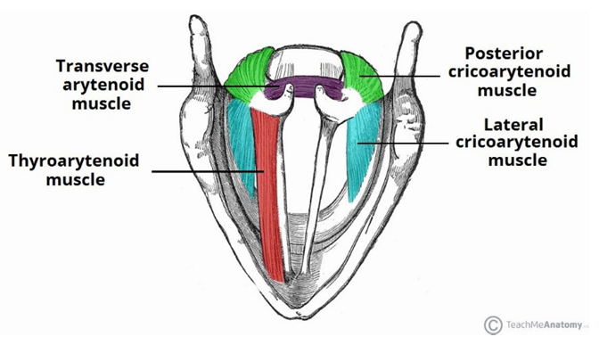
The intrinsic laryngeal muscles act on the different parts of the larynx. They control the shape of the glottis (the opening between the vocal folds and arytenoid cartilages), as well as the length and tension of the vocal folds.
Thyroarytenoid muscle: Also known as the vocalis muscle, it forms the muscular layer of the vocal folds and helps relax the vocal-fold ligaments and shorten the folds.
Lateral cricoarytenoid muscle: Extends from the front of the cricoid cartilage to the arytenoid cartilage and adducts the vocal folds.
Posterior cricoarytenoid muscle: Also called the cricoarytenoid posterior muscle in some terminology, this paired muscle extends from the back of the cricoid cartilage to the arytenoid cartilages and opens the vocal folds.
Transverse arytenoid muscle: Connects the two arytenoid cartilages.
Cricothyroid muscle: Connects the cricoid cartilage to the front of the thyroid cartilage. When it contracts, it lengthens and tenses the vocal folds, increasing their vibration frequency. It is a key muscle for raising pitch (F0).
The lip-and-jaw system—the voice’s “final mixing console”
The lips are the final point through which sound radiates into the outside world, and their shape has a substantial effect on the voice’s high-frequency characteristics:
- Orbicularis oris: A circular muscle surrounding the mouth opening. When it contracts, it pushes the lips forward and brings them together (lip rounding). This lengthens the vocal tract and narrows its outlet, pulling formant frequencies downward.
- Lip-spreading muscles (including the risorius and buccinator): They act in opposition to the orbicularis oris. When they contract, they pull the corners of the mouth sideways (spreading the lips), shortening the effective vocal-tract length and raising formant frequencies. This is why the “smiling voice” technique can make a voice sound brighter.
- Masseter and temporalis: Powerful jaw-closing muscles. Many men habitually speak with tense masseters, preventing the mouth from opening effectively and keeping F1 relatively low. Relaxing the masseter and allowing the jaw to drop naturally are prerequisites for raising F1.
Review questions
1. After sound is produced by the lungs, which structures does it pass through?
2. Where are the Adam’s apple and the vocal folds located?
3. What are the three coordinated steps involved in larynx elevation, and which muscles are responsible for each step?
4. What role does the hyoid play in the vocal system? Why is it called the “crossroads”?
5. Why can tension at the tongue root affect larynx elevation?
Try it
1. Swallow once and feel beneath your jaw around the mylohyoid area. Can you feel it tighten? Then touch your Adam’s apple and notice how it moves upward and returns to its resting position.
2. Put your hands around your neck and make an exaggerated angry expression. Can you feel the infrahyoid muscles moving?
3. Open your mouth and push your tongue firmly forward while touching your Adam’s apple with your hand. Can you feel it move upward too? This demonstrates how the genioglossus can push the tongue forward and help raise the hyoid.
2. An Overview of Voice Acoustics
1. Source-Filter Theory
The source-filter model is a theory of speech (human voice) production. It proposes that the complex waveform emitted from a speaker’s mouth depends on two components:
1. Source—the waveform generated at the glottis
2. Filter—the way the vocal tract amplifies or attenuates parts of the source waveform
Put simply, the source generates the initial sound, and the vocal-tract filter modifies it.
A closer look at the source:
When you produce a voiced sound, the vocal folds vibrate and air passes through them in pulses, generating sound waves. Try placing a finger near your larynx (for example, on your Adam’s apple) while singing or speaking loudly. You should be able to feel the vibration.
The vibrations in voiced sounds usually contain a series of different frequencies, called harmonics. Each frequency has its own amplitude. A spectrum is commonly plotted with frequency on the horizontal axis and the amplitude at each frequency on the vertical axis.
A closer look at the filter:
The filter changes the waveform generated by the source. The position of your tongue and the shape of your open mouth alter different frequencies, so the resulting sound changes. Try singing a sustained note at a steady pitch and volume (for example, a sustained “ah”). While holding the sound, change how far your mouth is open and move your tongue up, down, forward, and back. You will hear other vowels or speech sounds emerge. For example, start with your mouth open for “ah,” then gradually make your lips smaller and more rounded; the sound may shift toward “oh.”
The position of the soft palate also changes the filter. Try making “mm” and “ah” sounds, then open your mouth while pinching your nose, and then release your nose and close your mouth. You will notice that the soft palate helps connect or separate the oral and nasal cavities, and that the state of the nasal cavity can also affect your voice.
Although source-filter theory is a useful approximation of speech production, it is important to remember that it remains an approximation. Real speech production is nonlinear and time-varying, and the source and filter interact in complex ways rather than operating in only one direction. This theory is often insufficient for a strictly detailed account of speech, but it provides a reasonable approximation in many situations, which is why many speech technologies are based on it.
Before going further, let’s reinforce two common concepts used in voice acoustics to describe sound: (1) amplitude, the size of a sound wave’s oscillation, which is also related to how loud a sound is perceived; and (2) frequency, the rate at which the wave oscillates. Higher frequencies oscillate faster and sound higher-pitched; lower frequencies oscillate more slowly and sound lower-pitched. The human ear can hear frequencies from about 20 to 20,000 Hz. You may remember these concepts from school physics.
With this background, we can put source-filter theory into practice:
When the vocal tract is in a given natural configuration, applying a continuous source signal that sweeps from high to low frequencies produces the following filter response (that is, the spectrum of the sound coming out of the vocal tract):
(Spectrum diagram: frequency from 0–5000 Hz on the horizontal axis and response amplitude on the vertical axis, with peaks around 500 Hz, 1500 Hz, and 2500 Hz)
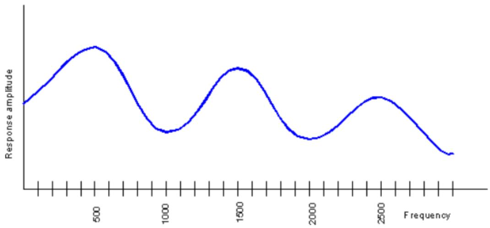
Remember the harmonics we discussed? The real source signal produced by the vocal folds consists of harmonics like these—not a continuous sweep, but a set of discrete frequencies:
(Harmonic diagram: one vertical bar every 100 Hz starting at 100 Hz, with amplitude decreasing as frequency increases)
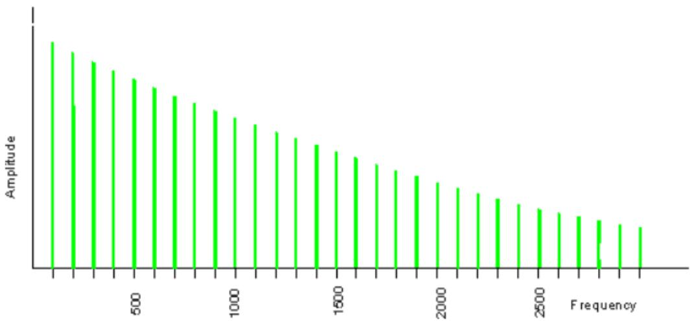
Remember source-filter theory? By combining the two diagrams above—the filter response and the source signal—we obtain a spectrum representing a real human voice:
(Voice spectrum diagram: the envelope of the harmonic bars has peaks around 500 Hz, 1500 Hz, and 2500 Hz)
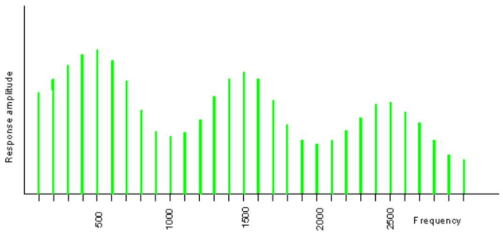
When you say different vowels at the same pitch, the spacing between harmonics remains the same (the number of frequencies does not change, so the spacing between the vertical bars remains constant), but the peaks appear at different frequencies (different horizontal positions).
When you say the same vowel at different pitches, the frequencies of the peaks (their horizontal positions) and the overall spectral shape remain roughly the same, but the spacing between harmonics changes (the number of frequency components changes, so there are more or fewer vertical bars).
Now you can read these spectrum diagrams. You may be wondering what the horizontal positions of the peaks and the overall shape of the spectrum mean. That brings us to resonance and formants.
2. Resonance and Formants
Resonance:
Every object has natural vibration frequencies. If you try to make it vibrate at a different frequency, the vibration is suppressed and may eventually disappear. If you drive it at its natural frequency, the vibration is reinforced, producing resonance.
Some examples of resonance:
The standing waves produced on a jump rope when you periodically move one end up and down
Blowing across the mouth of a half-filled beer bottle and hearing a steady note
Vibrations in a violin’s soundboard
A swing moving higher when you push it at just the right moment
If you try to make an object vibrate at twice its natural resonant frequency, the result may be weak. If you drive it at three times that frequency, resonance can occur again, though not as strongly as at the lower resonant frequency. This pattern repeats: every odd multiple of the lowest resonant frequency can act as a resonant frequency.
For a half-open tubular instrument 17 cm long—a typical length for an adult male vocal tract—the resonant frequencies are approximately 500, 1500, 2500, 3500 Hz, and so on.
Remember the spectrum diagram at the end of the previous section? Look at it again and you will see that several peaks fall around 500, 1500, and 2500 Hz. Human voices therefore resemble the sounds produced by tubular instruments in that both involve resonance.
In voice acoustics, we label the resonances that occur in the vocal tract during phonation in order of increasing resonant frequency: R1, R2, R3 … Ri. Keep this concept in mind; we will use it again later.
Formants:
We just mentioned the peaks in a spectrum. These peaks are called formants. The formal definition of a formant in voice acoustics can be difficult to follow, so the following definitions are provided for anyone who wants to explore the topic further:
James Jeans (1938) used “formant” to refer to a group of harmonics strengthened by resonance.
Gunnar Fant (1960) defined it as follows: “A peak in the sound spectrum | P ( f )| is called a formant.”
Benade (1976) defined it as follows: “A peak observed in the spectral envelope is called a formant.”
Put simply, a formant is a bump in the frequency-response curve: one of the resonant frequencies that has relatively high amplitude among the frequencies in a sound. These are usually labeled F1, F2, F3, and so on.
As the analysis above shows, a human voice has multiple formants. From lowest to highest, we label their frequencies F1, F2, F3 … Fi. Remember R1, R2, R3 … Ri from earlier? The two sets correspond one-to-one: each resonance (Ri) corresponds to a formant frequency (Fi). In most cases, we use F1–Fi to identify specific formant frequencies and less often use R1–Ri, although some sources use both systems. For our purposes, it is enough to know that they refer to closely related concepts.
It is easy to identify formants in the type of spectrum shown earlier, where frequency is on the horizontal axis and amplitude is on the vertical axis: they are the local maxima of the curve. Next, we will introduce another, more complex but more widely used type of plot. Its horizontal axis represents time, its vertical axis represents frequency, and amplitude is represented by color intensity: darker colors indicate greater amplitude, while lighter colors indicate lower amplitude.
To put it more intuitively, imagine flattening the previous spectrum into a line, coloring its peaks black and its valleys white, then rotating it into a vertical line. That line represents the spectrum at one instant in time. Arrange many such lines from left to right and you get a spectrum that changes over time. This type of plot is called a spectrogram, or time-frequency plot.
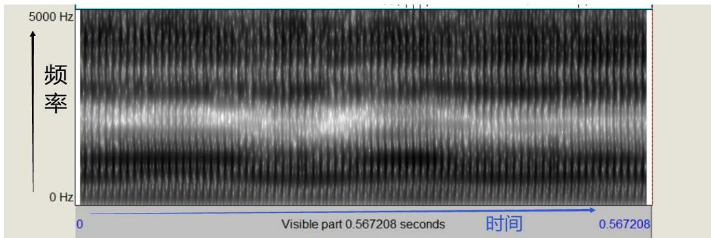
Marking the darkest points (the peaks in the non-time-varying spectrum) gives us the formant track (red dots). From bottom (low frequency) to top (high frequency), these are F1, F2, F3, F4, and F5.
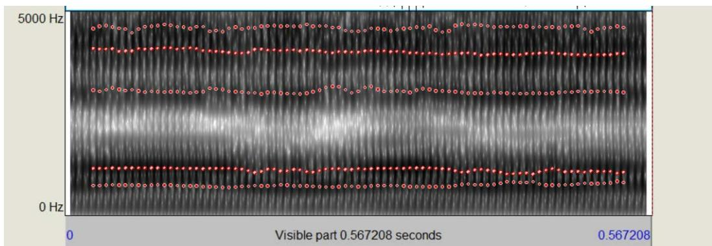
Another detail worth noting is that the spectrogram contains a series of vertical stripes. When you produce a higher-pitched sound, the spacing between these stripes becomes narrower.
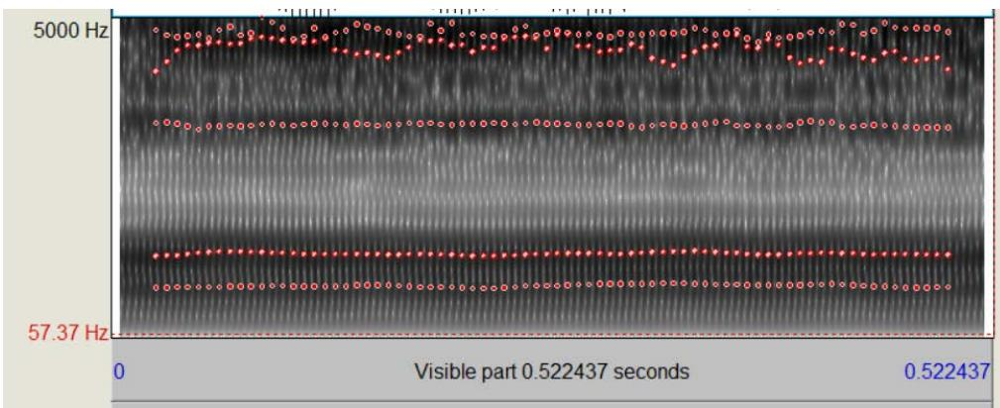
At a higher pitch, the waveform is denser; at a lower pitch, it is more spread out. We call this overall repetition rate the fundamental frequency, written as F0. F0 is not itself a formant frequency; the notation is simply convenient. As the two diagrams above show, even though F0 increases from 140 Hz to 240 Hz, the light-and-dark pattern, the positions of the formant tracks (that is, the formant frequencies), and their number do not change substantially. In other words, F0 does not determine the formant characteristics of a sound.
Many vocal-training theories also use the concept of pitch, which is equivalent to the fundamental frequency F0 in voice acoustics. We may use both terms later, so remember how they relate.
Whether we look at a static spectrum or a time-varying spectrogram, we can identify the fundamental frequency and formants by following certain patterns. Remember that formants Fi are key tools for analyzing vocal characteristics. We will explore them further shortly, but first let’s review what we have covered in this section:
Review questions
1. What is the source of a sound? What structure corresponds to the filter?
2. When frequency is on the horizontal axis and amplitude is on the vertical axis, how can you identify a formant?
3. When time is on the horizontal axis and frequency is on the vertical axis, how can you identify a formant?
4. What is the relationship between fundamental frequency and pitch?
5. What is nonlinear coupling between the source and filter, and why does it matter for high-larynx phonation?
Try it
1. Slightly open your mouth and make a little sound to get your vocal folds vibrating.
2. Keep making a sustained sound, pinch your nose, and move your tongue around. Can you hear your voice change? Can you recognize how the filter works?
3. From Tubes to the Vocal Tract: How Do Formants “Take Shape”?
In the previous section, we learned what formants are (peaks in spectral energy) and that the vocal tract resonates much like a tube. But you may still be wondering: Why do formants change when you move your tongue or raise your Adam’s apple? The physical intuition behind this is actually fairly straightforward.
The pinched-hose analogy—perturbation theory
Imagine holding a flexible garden hose with water flowing through it. If you squeeze the hose at a certain point, the flow changes—and the effect depends on where you squeeze it.
Air vibrations in the vocal tract work in a similar way. Acoustics has a framework called “perturbation theory,” and its core idea is simple:
Does that sound abstract? Let’s make it concrete with some examples:
F1—the “mouth-opening formant”
One characteristic of the F1 standing-wave pattern is that its pressure antinode is near the glottis (the closed end of the tube), while its velocity antinode is near the lips (the open end).
- When you open your mouth wide (expanding the front of the oral cavity): the expansion occurs at a velocity antinode → F1 increases
- When you close your mouth and raise your tongue (narrowing the front of the oral cavity): the narrowing occurs at a velocity antinode → F1 decreases
That is why F1 is directly linked to how wide your mouth is open—or, inversely, to tongue height. The wider your mouth opens and the lower your tongue sits, the higher F1 becomes. This is why /a/ (“ah”) has a high F1 (mouth wide open), while /i/ (“ee”) has a low F1 (the mouth is almost closed).
F2—the “front-back position formant”
The F2 standing-wave pattern is more complex, but one key feature is that its pressure antinode is roughly in the front part of the oral cavity, near the front of the hard palate.
- When you move your tongue forward, bringing the tongue surface close to the front of the hard palate: the narrowing occurs at a pressure antinode → F2 increases
- When you move your tongue backward, bringing the tongue root closer to the pharyngeal wall: the narrowing moves away from F2’s pressure antinode → F2 decreases
So F2 is directly linked to the front-back position of the tongue: the farther forward the tongue is, the higher F2 becomes and the “brighter” the voice sounds; the farther back it is, the lower F2 becomes and the “darker” the voice sounds.
In addition, the height of the larynx has a global effect on F2: raising the Adam’s apple shortens the vocal tract from below, shifting all formants upward, with the greatest benefit often seen in F2. This is why high-larynx training is central to voice feminization.
F3—the “lip shape and tongue-tip formant”
F3 is especially sensitive to lip rounding or spreading and to curling the tongue tip:
- Lip spreading (smiling) → shortens the end of the vocal tract → F3 increases
- Lip rounding (puckering) → lengthens the end of the vocal tract → F3 decreases
- Retroflexion (curling the tongue tip backward) → creates a small side cavity behind the tongue tip → F3 drops sharply
Connecting anatomy and acoustics
We can now draw a clear map of how these factors correspond:
| Action | Acoustic effect | Perceived quality |
|---|---|---|
| Open the mouth wide and lower the tongue | F1 increases | The voice sounds more “open” and resonant |
| Push the tongue forward toward the front of the hard palate | F2 increases | The voice sounds “brighter” and crisper |
| Raise the Adam’s apple (shorten the vocal tract) | F2 and F3 rise overall | The voice sounds brighter rather than dark |
| Spread the lips (smile) | F2 and F3 increase | The voice sounds “sweeter” and younger |
| Round the lips (pucker) | All formants decrease | The voice sounds more muffled and fuller |
| Pull the tongue root backward | F2 decreases | The voice sounds darker and more “masculine” |
Review questions
1. What is the core idea behind perturbation theory?
2. What factors mainly affect F1? What about F2?
3. Why can raising the Adam’s apple make the voice sound brighter? Explain acoustically.
4. Why can rounding the lips make the voice sound muffled?
Try it
1. Keep your pitch steady and first say /a/ (“ah”). Then slowly move your tongue forward without changing your mouth shape. Does the sound become “brighter”? This is F2 increasing.
2. Sustain /a/ with your usual mouth shape, then slowly spread your lips into a smile. Does the high-frequency part sound clearer? This shows how lip spreading affects F3.
3. Sustain /i/ (“ee”), then gradually pucker your lips to move toward /y/ (the “ü” vowel). Can you hear the sound become rounder? This is the effect of lip rounding lowering the formants.
Gender Perception of the Voice
1. Formant Characteristics of Vowels
When we produce a monophthong (in Mandarin, typically a, o, e, i, or u), the voice generates multiple formants.
The F1 of vowels usually falls between 200 and 800 Hz. The smaller the mouth opening, the lower F1 tends to be; opening the mouth wider can increase F1 substantially.
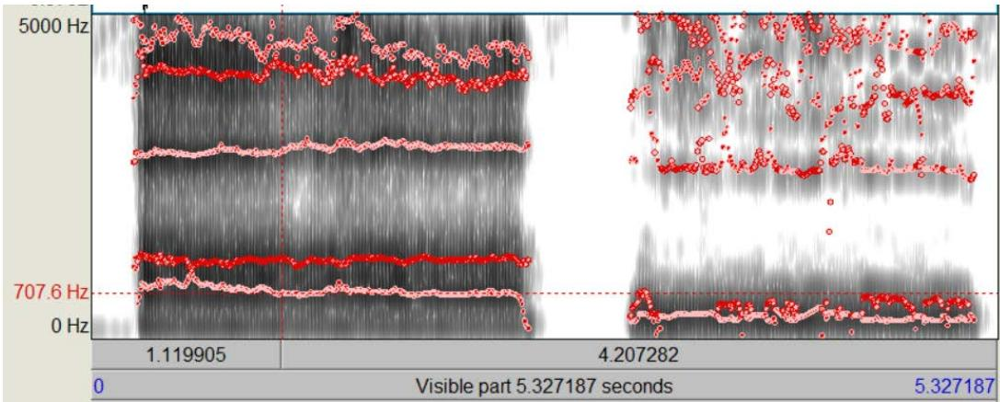
Typical F2 values for vowels are around 800–2000 Hz. F2 can be changed substantially by rounding or spreading the lips and by raising or lowering the larynx.
Vowels can also be classified according to tongue height and front-back position: high vowels, low vowels, front vowels, and back vowels. F1 is influenced by tongue height: high F1 = low vowel = low tongue position; low F1 = high vowel = high tongue position. F2 is influenced more by the front-back position of the tongue: high F2 = front vowel = tongue forward; low F2 = back vowel = tongue back.
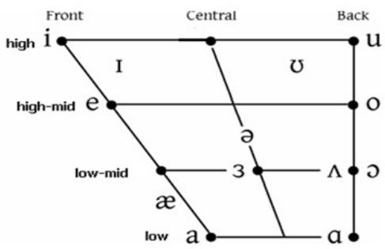
For example, when producing /a/, a forward tongue position yields an F2 of around 1200 Hz, while a more retracted tongue position yields an F2 of around 1000 Hz.
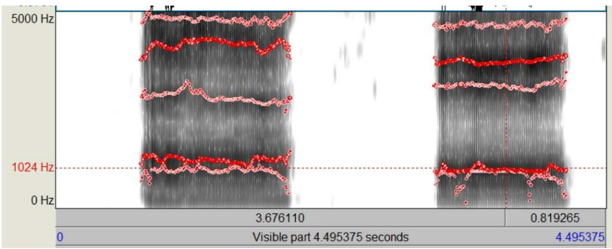
F1 and F2 are both affected by oral-cavity size, mouth shape, tongue position, and larynx position. In general, F1 is affected most by mouth opening, while F2 is affected most by the position of tongue-root narrowing (that is, larynx position). F3 is related to the degree of tongue curling, lip rounding, and nasality.
2. Gender Differences in Mandarin Vowel Formants: Data and Interpretation
Now that we understand the relationship between formants and the structures involved in phonation, let’s look at a question that is crucial to voice feminization: How much do formants differ when men and women produce the same vowel, and why are the differences so large?
Data: Comparing Formants of Core Mandarin Vowels in Men and Women
The table below is based on acoustic research involving large numbers of adult male and female native Mandarin speakers:
| Vowel | Pinyin example | Gender | F1 (Hz) | F2 (Hz) | F3 (Hz) |
|---|---|---|---|---|---|
| /a/ | “ah,” “ba” | Male | 710-750 | 1200-1350 | 2400-2600 |
| Female | 880-950 | 1400-1500 | 2700-2900 | ||
| /i/ | “ee,” “bi” | Male | 300-360 | 1750-2150 | 2700-3100 |
| Female | 350-440 | 2300-2750 | 3100-3400 | ||
| /u/ | “oo,” “bu” | Male | 350-440 | 700-1000 | 2300-2500 |
| Female | 400-490 | 750-1100 | 2600-2800 | ||
| /e/ | “e,” “bei” | Male | 470-520 | 1100-1350 | 2400-2600 |
| Female | 550-650 | 1300-1700 | 2800-3100 | ||
| /o/ | “oh,” “bo” | Male | 400-450 | 680-850 | 2400-2700 |
| Female | 450-500 | 760-950 | 2300-2800 | ||
| /y/ (ü) | “ü,” “nü” | Male | 320-380 | 1600-1800 | 2200-2400 |
| Female | 350-420 | 2000-2300 | 2600-2900 |
(Bold values in the table indicate especially pronounced gender differences in formants.)
Interpretation: It is not as simple as “the tube is 15% shorter”
You might think: the female vocal tract is about 15% shorter on average than the male vocal tract (around 14 cm for women and 17 cm for men), so shouldn’t all formants simply be about 15% higher?
The reality is much more complicated. Looking carefully at the data above, you will notice several interesting patterns:
Pattern 1: The F1 difference for the open vowel /a/ is remarkably large
For /a/, women’s average F1 exceeds 900 Hz, while men’s is only around 730 Hz—a difference of nearly 25%, far more than vocal-tract length alone can explain. What does this suggest? When producing open vowels, women often lower the jaw farther and open the oral cavity more in absolute terms. Put simply: Women tend to open their mouths wider and lower their tongues more when saying “ah.”
For the high vowels /i/ and /u/, the gender difference in F1 is much smaller (only a few dozen hertz), because the mouth is relatively closed for these vowels in both men and women.
Pattern 2: The F2 difference for the front vowels /i/ and /y/ is very large
For /i/, women’s F2 can reach 2300–2750 Hz, while men’s is around 1750–2150 Hz—a difference of several hundred hertz. The /y/ (“ü”) vowel shows a similar pattern. This suggests that the difference is not simply due to a shorter pharynx: women also tend to push the entire tongue farther forward when producing front vowels, bringing the highest part of the tongue closer to the front of the hard palate.
Pattern 3: Gender differences are relatively small for rounded vowels /u/ and /o/
For /u/ and /o/, F2 is low in both men and women (below 1100 Hz). The physical effects of lip rounding are strong: rounding lengthens the vocal tract while narrowing its opening, shifting the spectrum downward. Even if you raise the Adam’s apple as much as you can, this low-frequency effect can still pull the voice back toward a darker, more traditionally masculine timbre.
Vowel Space Area (VSA)—A Holistic Perspective
If we plot each vowel’s F1 and F2 in a two-dimensional coordinate system (F2 on the horizontal axis and F1 on the vertical axis), the vowel points form a polygon. This is called the Vowel Space Area (VSA).
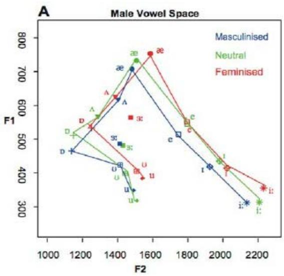
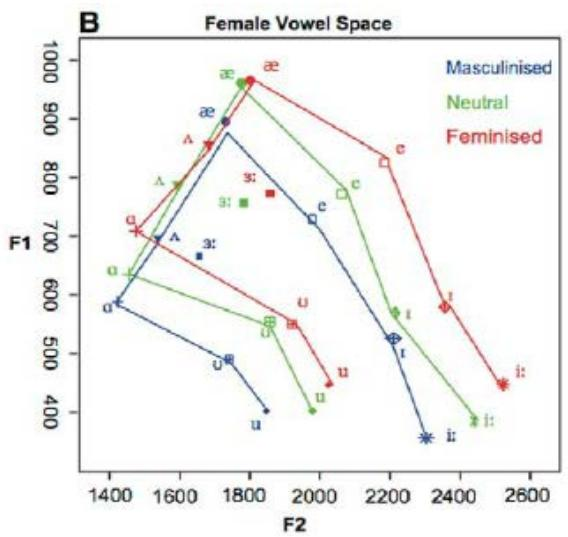
Research has found that: The VSA polygon is significantly larger for women than for men.
What does this mean? In everyday speech, women tend to distinguish vowels more strongly: /a/ is more open, /i/ is more fronted, and each vowel is articulated more fully and distinctly. Men tend to use more indistinct, centralized articulation, so the differences between vowels are smaller.
Voice feminization, then, is not just about “shifting formants upward.” It also involves moving from a relaxed, indistinct articulation pattern toward a more precise and clearly differentiated one. You need to articulate each vowel more fully and distinctly: open your mouth confidently when a vowel calls for it, and push your tongue forward when needed.
3. Factors Associated with Gender Perception
Let’s revisit a concept introduced earlier: fundamental frequency F0, also called pitch in vocal-training terminology. Research suggests that when listeners do not know a speaker’s gender, they may identify it based on F0 even when the formant-frequency cues point in the opposite direction.
F0: The Foundation of Voice Feminization
Male speaking F0 is generally considered to fall between 85 and 155 Hz, while female speaking F0 is around 165–255 Hz. That is a substantial difference. We can confidently say that a higher F0 is a prerequisite for a voice to be perceived as female, and is also the foundation of voice feminization.
F2: An Important Feature of Voice Feminization
Beyond the importance of F0, many studies reach a relatively consistent conclusion: F2 is the formant among the Fi series that best distinguishes gender-related vocal characteristics. One possible reason is that F2 is affected by larynx height. A high larynx can shorten the vocal tract, bringing a typically longer male vocal tract (about 16.9 cm on average) closer to a shorter female vocal tract (about 14.1 cm on average). Voices with higher F2 are often perceived as bright, while those with lower F2 are perceived as dark. Compared with F0, we can call F2 an important feature of voice feminization.
F1: A Secondary Feature of Voice Feminization
As for F1 (or R1), some currently popular voice-feminization tutorials, particularly those from overseas, call R1 the “gender knob” and consider it the most important factor in voice feminization. I am not entirely convinced. Such tutorials often confuse acoustic resonance with the anatomical cavities of the vocal tract, using R1 to refer to the space inside the larynx. From the perspective of voice acoustics, however, narrowing the laryngeal space and raising the larynx have the greatest effect on R2 resonance and its corresponding formant F2. By contrast, R1 resonance and F1 are affected by mouth opening and tongue position. Of course, F1 still shows clear differences related to gender perception, especially for more open vowels such as /æ/, /ʌ/, /ə/, and /ɪ/ (or their long-vowel counterparts). These differences may result from habitual differences in mouth shape and tongue position between men and women, as shown in the data above: women open their jaws wider for open vowels. Compared with F0 and F2, we can call F1 a secondary feature of voice feminization.
F0, F2, and F1 together form the main factors involved in gender perception of the voice. In addition, some factors beyond vocal-tract resonance also affect gender perception. For example, some studies suggest that greater pitch modulation (F0-SD, the degree to which F0 varies throughout an utterance, or pitch variation) is a typical feature of female voices. A higher harmonics-to-noise ratio (HNR, indicating more audible breathiness) and lower jitter (often perceived as vocal “roughness”) have also been reported as differences between female and male voices. Many studies in particular have highlighted the importance of the breathiness represented by HNR.
Now that we understand gender perception of the voice and how different formant frequencies relate to the structures involved in phonation, we can begin practicing voice feminization. Before that, let’s review these important concepts once more.
Review questions
1. Which vocal structures affect F1?
2. Which vocal structures affect F2?
3. What is the prerequisite for voice feminization?
4. What is an important feature of voice feminization?
5. What other factors influence gender perception of the voice?
6. How does women’s vowel space area (VSA) differ from men’s, and what does this suggest for training?
7. Why is the gender difference in F1 especially large for /a/?
Try it
1. First say /a/ (“ah”), then gradually round your lips until you move toward /u/ (“oo”). Notice how the degree of mouth opening affects the sound.
2. Say /i/ (“ee”), /æ/ (“eh”), and /a/ (“ah”) in sequence. Notice how the tongue moves higher or lower.
3. Say /i/ (“ee”), /ə/ (“uh”), and /o/ (“oh”) in sequence. Notice how the tongue moves forward or backward.
4. Hold your palm in front of your mouth, exhale as if warming your hands, then produce /a/ (“ah”). Notice how the airflow against your palm changes.
5. Try producing /a/ in a more exaggerated way: lower your jaw a little more than usual and open your mouth wider. Does the voice sound more “open” and resonant? This imitates the greater mouth opening often used by women.
Using Praat to Support Voice Practice
Before you begin practicing, I recommend reading this section. It briefly introduces Praat, a program that lets you view spectrograms of your voice and analyze pitch, amplitude, and formant characteristics. This can be very helpful during practice. You can download the program here:
https://www.fon.hum.uva.nl/praat/ You can choose the appropriate version for your operating system and install it.
After opening Praat, use the New / Record mono sound option to record directly from an audio device connected to your computer. Alternatively, choose Open / Read from file to open a recording stored on your computer.
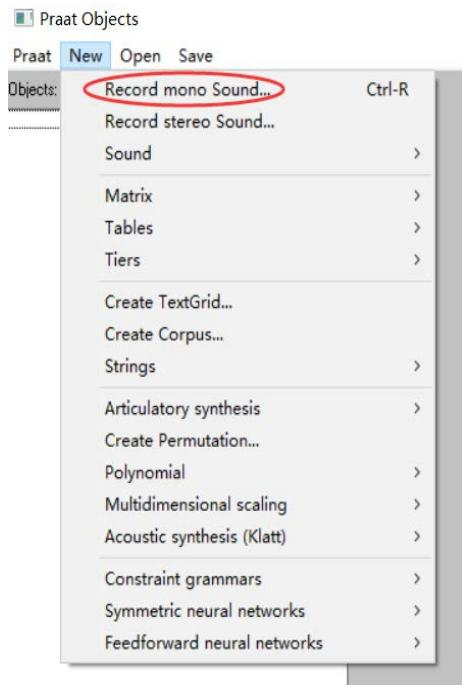
After recording and saving the sound (Save to list), or after opening a recording file, you will see a menu on the right. We generally use View & Edit to inspect the spectrogram.
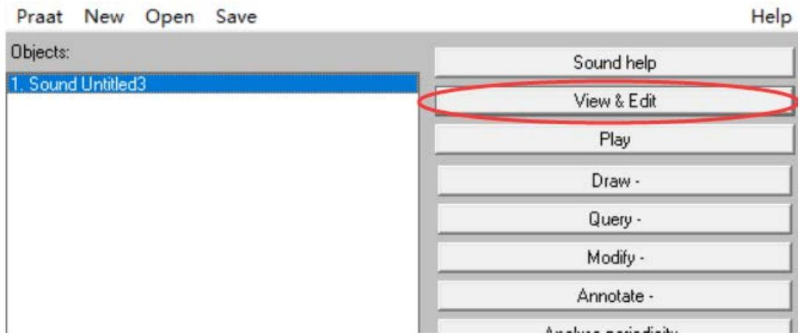
In the spectrogram window, open Spectrum, Pitch, Intensity (equivalent to loudness), and Formant in turn, and choose Show for each to display them. You will see the familiar spectrogram: the left side shows the frequency range for resonances, and the right side shows the pitch range. The blue line is the pitch contour, the yellow line is intensity/amplitude, and the red dots are the approximate formant positions calculated by the software. With this information, we can use what we have learned about formants to analyze our phonation, identify problems, and make adjustments using the corresponding exercises.
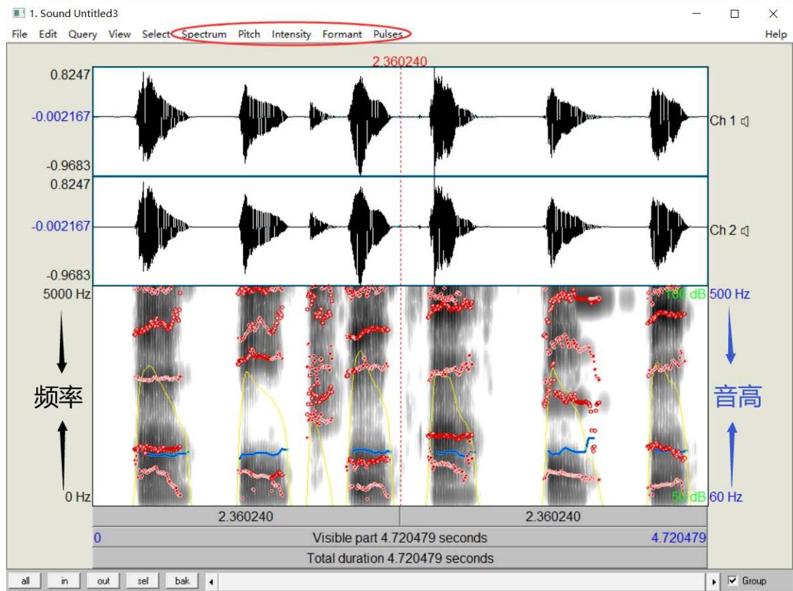
If your recording equipment or environment is noisy, consider using more professional recording equipment or recording with audio-editing software such as GoldWave. Apply its noise-reduction feature, save the processed file, and then import it into Praat using Open / Read from file.
Please note that the pitch contour, intensity contour, and formant markers shown in a spectrogram are approximate results calculated by software from the audio signal and may be inaccurate. If the formant pattern looks seriously implausible, try judging the relative darkness and lightness of the spectrogram as explained above, and use the typical frequency ranges of each formant to make your own assessment.
1. Raising F0
Mechanism
F0 (fundamental frequency/pitch) is determined by the rate of vocal-fold vibration. The key muscle controlling pitch is the cricothyroid muscle—which connects the cricoid cartilage to the front of the thyroid cartilage. When it contracts, it lengthens and tightens the vocal folds, raising their vibration frequency, much like tightening a guitar string.
The F0 of female speaking voices typically ranges from 165 to 255 Hz, compared with 85 to 155 Hz for male speaking voices. Raising F0 is the first step in voice feminization and a prerequisite for it.
Practice method
A typical practice sequence:
Glide up a scale → find your transition point (the point where your voice cracks, or where you begin using falsetto if you can distinguish it from modal voice) → lower the pitch slightly and record it as your target fundamental frequency for a feminine voice → hold this pitch and try speaking at a steady, robot-like pitch → then practice speaking normally with natural pitch variation around this F0.
Record yourself in Praat while gliding up the scale and inspect the pitch track. The blue line will rise in steps, showing the increase in pitch. Pitches perceived as feminine are often above 180 Hz, so your suitable target may also fall within this range.
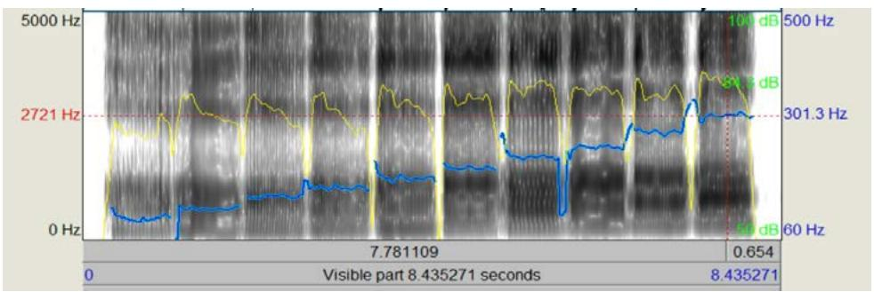
Remember: unless an exercise says otherwise, most of the exercises that follow should be performed at the higher F0 you have identified.
Self-assessment criteria
- ✅ Measure your speaking fundamental frequency in Praat and keep it stable above 180 Hz
- ✅ Speak at the target pitch continuously for more than 30 seconds without noticeable fatigue
- ✅ Use the target pitch with natural pitch variation (rather than a flat, robotic tone)
- ⚠️ If you find that you must use falsetto to maintain the target pitch, your target is probably too high. Lower it slightly.
2. Raising F2 (High-Larynx Training)
Mechanism
As discussed earlier, both F1 and F2 are affected by many aspects of phonation, but larynx height has the greatest influence on F2. A high larynx is associated with a higher F2 and a brighter-sounding voice, while a low larynx is associated with a lower F2 and a darker-sounding voice.
Now that you understand the three-step mechanism of larynx elevation, let’s connect it to training:
1. Suprahyoid muscles (especially the mylohyoid) pull the hyoid upward and stabilize it—this is the “ceiling-raising” step.
2. Thyrohyoid muscle pulls the Adam’s apple toward the hyoid—this is the key action that actually shortens the vocal tract.
3. Longitudinal pharyngeal muscles provide additional upward assistance from behind.
Most people without vocal training cannot control larynx height very well. When singing, however, you may naturally lower the larynx for low notes and raise it for high notes through compensatory muscle activity. These are automatic responses: when you cannot control the larynx directly, the hyoid muscles are forced to react as a group. This is not ideal for stable speech, so learning to control larynx position deliberately requires repeated practice.
Controlling larynx position is a common foundational vocal exercise. Unlike voice feminization, which may call for a consistently high larynx, vocal training often emphasizes a low or stable mid-level larynx. Some vocal trainers believe a high larynx causes injury, while others note that a high larynx does not necessarily cause harm. The risk often comes from the throat tightening that accompanies it. With appropriate practice, you can maintain a high larynx while keeping the throat open and reduce the risk of injury.
For voice feminization, this is an important reminder: practice keeping the larynx high and stable while also practicing an open throat. Many cases of hoarseness or a voice that sounds “dry” or “rough” are associated with not including corresponding open-throat exercises.
The training can be broken down into several steps:
(1) High-larynx exercises
Contraction around the tongue root is key to raising the larynx. This requires learning to engage and control the hyoid muscles, especially the mylohyoid among the suprahyoid group. Here are several exercise options:
1. Swallowing exercise: touch your Adam’s apple with your hand or watch in a mirror as you swallow once. You will notice it move upward and then return to its resting position. Swallow again, this time paying attention to the sensation inside your throat when the Adam’s apple reaches its highest point. You may feel the whole laryngeal passage close off, creating a blocked sensation. When you try to breathe, the larynx relaxes and the Adam’s apple drops. Note: This is only intended to help you notice the sensations. The author does not recommend practicing larynx elevation by swallowing while holding your breath.
2. Pre-swallow exercise: imagine preparing to swallow, but do not actually swallow. You may notice your Adam’s apple rise slightly. Between breaths, try repeatedly entering this preparatory swallowing position until you can do it reliably. As you practice, notice which muscles tense. Under typical conditions, you may feel tension where your jaw meets your neck. If you cannot clearly sense this movement, that is okay—try another exercise instead.
3. The “wow” exercise: slowly and exaggeratedly produce a “wow” sound, making it as exaggerated as possible—deliberately strange, theatrical, or mocking, and perhaps a little higher in pitch. Spread your lips as wide as you can. Touch your Adam’s apple or watch it in a mirror. You may notice it move upward as you spread your lips while moving from “wo” to “ow.” Try prolonging this transition and keeping your Adam’s apple a little higher.
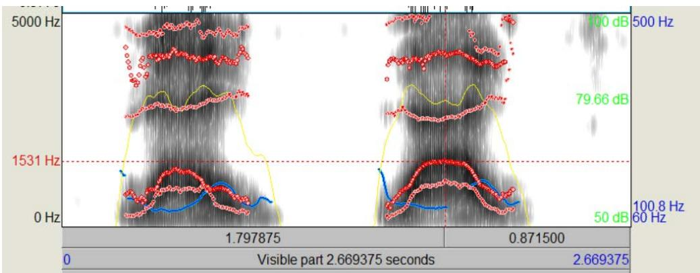
4. The “EEE” exercise: spread your lips as much as possible and sustain a higher-pitched E sound (like “ee” or Mandarin pinyin i). You may notice your Adam’s apple moving upward; try to keep it there. Better still, imitate a cartoon witch’s drawn-out “hihihihi” laugh. You may find that repeating “hi” gradually stabilizes the larynx in a higher position.
5. The big-dog / little-dog exercise: imitate a big dog panting heavily on a hot summer day, lying down with its tongue out—low “ho, ho, ho” panting sounds. Then imagine a little dog panting in the same way, but making short “ha, ha, ha” sounds. Observe whether your Adam’s apple moves upward, and try to sense and control the laryngeal muscles to keep it in a higher position.
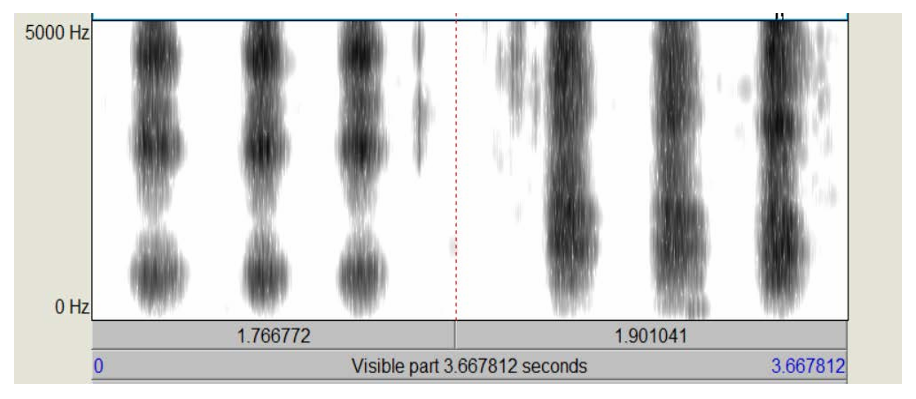
6. Vampire voice exercise: imitate a vampire. Start with a low “huuuu,” then open your mouth wide and continue into “huuuaaaaa.” Observe whether your Adam’s apple rises. Try to feel the laryngeal muscles, sustain the sound, and keep your larynx in a higher position.
Try all of the exercises above, choose just the one you understand or can do most easily, or even invent another method through imitation and play. The goal is to raise the larynx as comfortably and steadily as possible. Remember the aims: notice the feeling of muscle tension, begin learning to control the muscles, and stabilize the larynx at the desired height.
(2) Vowel exercises
Once you can keep your larynx at a stable height, practice producing different sounds from that position, starting with basic monophthongs. Record yourself using an audio-recording program. First, say a series of vowels at your target feminine pitch (the one you found during F0 training) with your larynx in its usual position. You can use IPA vowels, the five vowels AEIOU, or the Mandarin finals a, o, e, i, u, ü. Then use the method you learned above to raise and stabilize your larynx, and say the same vowels at the same pitch. After recording, import the audio into Praat and check whether F2 has increased. Practice individually the vowels where it has not. If you do not want to use Praat, listen to the recording again and notice whether the voice sounds clearer or brighter; practice any vowels that still need work.
Once you have mastered monophthongs, move on to diphthongs such as ai, ao, ou, ie, and iu.
F2 is an important feature of voice feminization, so high-larynx training is central to the process and may take a long time. More importantly, these exercises involve controlling muscles and establishing a new muscle-response pattern physiologically. You cannot simply follow fixed steps passively; you need to play actively with your own voice (remember what the author said in the introduction?), consciously observing and analyzing the sounds you make. If you approach this passively, as if doing schoolwork, you may take much longer or make little progress.
However, further adjustments to vocal characteristics—such as the F1-raising techniques discussed below—can also change F2, so keep that in mind.
(3) Open-throat and relaxation exercises
As mentioned earlier, a high larynx can easily be accompanied by throat constriction, which may lead to vocal injury. We therefore need additional exercises for keeping the throat open and relaxing the muscles.
In vocal training, “open throat” and “relaxation” are broadly similar, though their emphasis differs slightly. Open-throat work focuses on keeping the larynx at a stable, not excessively high position, avoiding excessive vocal-fold tension, and supporting airflow. Relaxation focuses more on releasing tension around the jaw and tongue. Here are several basic exercises:
1. Yawning exercise: yawn and notice how your larynx lowers and your throat opens, allowing more airflow. Try to find the preparatory sensation just before a yawn, then lower the larynx without actually yawning. This can help relax your throat.
2. Jaw-relaxation exercise: when you raise your larynx, your jaw may naturally tighten and lift. Let your jaw sit a little lower than it would when your mouth is naturally slightly open—in everyday terms, let it drop a little. This can ease tension in several hyoid muscles and help keep the throat open. Practice making this jaw position your default, then speak with a raised larynx and gradually build the habit.
3. Vocal-fold relaxation exercise: In vocal-training theory, vocal-fold “tightness” or “looseness” is closely related to how readily airflow passes through. Improving airflow is also one of the modifying features of voice feminization that we will discuss later. For now, it is enough to know that, for a typical masculine baseline voice, allowing somewhat more airflow during speech can also help keep the throat open. We will cover airflow exercises in a later section.
These exercises are only a starting point. The most important part of open-throat and relaxation work is still your own active exploration and awareness. As we have repeated, larynx elevation primarily requires coordinated action between the suprahyoid muscles and the thyrohyoid muscle. When these muscles are tense, other hyoid and intrinsic laryngeal muscles often tense up as well. The ultimate goal is to reduce unnecessary tension in those other muscles. This kind of muscular control cannot be developed through rigid drills alone; you need to explore, notice, and adjust your own muscle responses repeatedly.
Self-assessment criteria for F2 training
- ✅ Compare the same vowel with your larynx in its usual and raised positions; F2 should increase by ≥ 200 Hz
- ✅ Or, by listening, you should clearly hear the voice change from “dark” to “bright.”
- ✅ While keeping your larynx high, you can say at least five different vowels in a row without feeling tightness in your throat.
- ✅ When you touch your Adam’s apple, you can feel it staying about one to two finger-widths higher than its resting position.
- ⚠️ If your throat feels tight or your voice sounds dry or squeezed, this is a sign of the swallowing trap. Return to the open-throat exercises.
- ⚠️ If your F2 increases but your voice sounds like “Mickey Mouse,” your tongue root may be retracting; practice moving the tongue forward.
3. Raising F1
Mechanism
As discussed earlier, F1 is mainly affected by mouth opening and tongue height. According to perturbation theory, F1 has a velocity antinode near the lips. When the front of the oral cavity expands (as you open your mouth wider), F1 rises; when the front narrows (as you close your mouth or raise the tongue), F1 falls.
Recall the data table: women’s F1 for /a/ can reach 880–950 Hz, while men’s is only around 710–750 Hz. This difference mainly reflects two habitual patterns:
1. When speaking, women tend to have a greater range of jaw movement—they open their mouths more when the sound calls for it.
2. For certain vowels, women tend to have a slightly lower overall tongue position—which leaves more space in the oral cavity.
If you observe everyday speech, you may notice that many men open their mouths only slightly and use less variation in mouth shape, while women tend to show greater variation.
Practice method
Before practicing F1 raising, adjust Praat’s spectrogram settings to make formants easier to measure accurately. In Spectrogram settings, set View range to 0–2000 Hz. Similarly, in Formant settings, set Formant ceiling to 2000 Hz and Number of formants to 2 (so that only F1 and F2 are displayed).
Specific training steps:
Mouth-opening exercise: For the vowels /a/ and /o/, try producing the sounds with a more open mouth shape. For /a/, lower your jaw farther than usual. For /o/, reduce how much you pucker your lips and open your mouth more, making the rounded shape by drawing the lips inward. Record yourself in Praat and observe the position of F1.
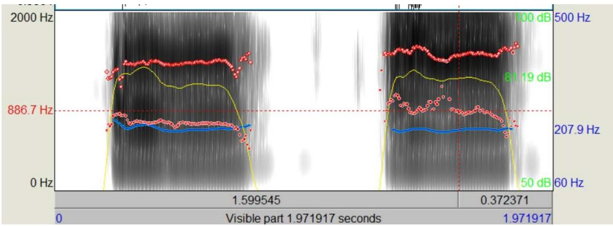
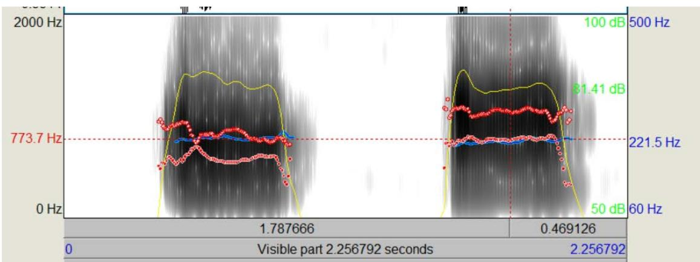
Lip-spreading exercise: For the vowel /e/, try spreading your lips while opening your mouth a little wider. Record yourself in Praat and observe F1.
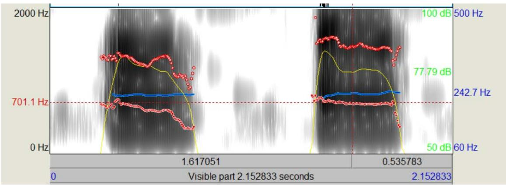
Diphthong exercise: For diphthongs such as ia, ie, ao, and ou, use the same techniques when producing or transitioning into /a/, /o/, or /e/.
Tongue-position exercise: Tongue height and front-back position affect F1 and, to some extent, F2. Unlike mouth opening, however, tongue position does not have one consistent characteristic that clearly distinguishes all women from men, even though it can affect F1 and F2 and thus influence gender perception. Some “tongue-heavy” or raised-tongue speaking styles may sound more cute or coy, but they are not required for voice feminization. There is no single fixed pattern for tongue-position training. You can practice a vowel in several different tongue positions, analyze and listen to the results, and continue with the position that suits you best or that you like most.
Self-assessment criteria for F1 training
- ✅ F1 for the open vowel /a/ reaches ≥ 850 Hz (the typical female range)
- ✅ F1 for the vowel /e/ reaches ≥ 550 Hz
- ✅ The voice sounds more open and clear rather than muffled inside the mouth.
- ✅ You can naturally maintain a wider range of mouth-shape changes in connected speech.
- ⚠️ Note: F1 is naturally low for high vowels such as /i/ and /u/. You do not need to force it higher; these vowels are made with a relatively closed mouth shape.
4. Other Modifying Factors
(1) Improving airflow
As mentioned in the section on gender perception, the breathiness represented by HNR (harmonics-to-noise ratio)—that is, the airflow component of the voice—can also help modify a voice toward a more feminine quality. However, improving airflow does not mean speaking with a breathy whisper, nor is it exactly the same as the “breathy singing” technique in vocal training. Essentially, it means relaxing the vocal folds to some degree. Compared with male speaking voices, female speaking voices tend to have more relaxed vocal folds and allow a greater proportion of airflow to pass through. You can practice this as follows:
1. Hold your palm in front of your mouth, open your mouth, and exhale as if warming your hands. You should feel warm airflow against your palm.
2. Keep the same mouth shape and exhalation, but begin vibrating your vocal folds. If you have not trained this before, you will usually notice that the airflow against your palm becomes much weaker.
3. Try to increase the airflow while keeping your vocal folds vibrating. Make sure you can still produce a stable voiced sound while feeling airflow against your palm again. Hold it for a few seconds, then repeat.
Once you can produce airflow while phonating reliably, practice vowels using that voice until you can feel airflow with each vowel. Note that the amount of airflow naturally varies across vowels. Generally, more open vowels allow more airflow, while vowels such as /o/ and /u/, which involve a smaller opening, may have little or no noticeable airflow. If you try too hard to maximize airflow, your voice may become breathy and lose its voiced quality; such a sound is usually not suitable for ordinary speech.
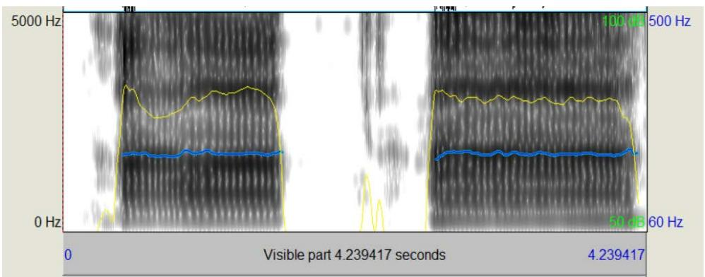
(2) Increasing pitch variation
Pitch variation refers to changes in pitch across words and phrases. Men’s typical speaking patterns tend to be more even, with smaller pitch changes, while women often use a wider range of pitch movement. You can readily notice this in everyday life. Practice pitch variation only after you have worked on vowels and individual syllables.
Reading aloud is a good way to practice pitch variation. Notice the rise and fall of pitch as you read, then gradually incorporate this feature into everyday speech. Keep in mind that although many women use more pitch variation than men, their everyday speech usually does not fluctuate as dramatically as expressive reading. Observe how women actually speak and introduce pitch variation in moderation.
(3) Twang—the advanced technique for vocal health
In addition to improving airflow and increasing pitch variation, we want to introduce a technique that can be very helpful for voice feminization: Twang (often translated as “pharyngeal voice” in Chinese vocal pedagogy).
Remember the “nonlinear coupling” discussed in source-filter theory? Twang’s physical mechanism takes advantage of that effect:
What is Twang? By moderately narrowing the passage above the epiglottis (the epilaryngeal tube), you create a trumpet-like space in the pharynx.
Acoustic effects of Twang:
- Increases inertive reactance throughout the vocal tract
- Provides an “aerodynamic cushion” as the vocal folds close, reducing collision-related damage
- Greatly increases high-frequency energy around 3000 Hz (similar to the singer’s formant effect)
- Allows the speaker to produce a brighter, more penetrating sound with less effort
Why is it especially important for voice feminization? Voice feminization may involve using a high larynx for extended periods, with the vocal folds vibrating at a higher frequency and colliding more forcefully. Without the protection provided by Twang’s inertive reactance, prolonged high-larynx phonation may cause vocal-fold fatigue or even injury. Twang is like adding an “air cushion” to protect vocal folds that are working at high speed.
Simple ways to try Twang:
- Imitate a duck quacking: “quack, quack, quack.”
- Imitate a witch’s laugh: “hee, hee, hee.”
- Say “mm-hmm” with a strong nasal quality, then open your mouth while keeping the same sensation in the pharynx.
Readers who are interested can look for relevant instructional videos to practice the technique more systematically.
(4) Other factors
Other modifying features of voice feminization include reducing vocal tremor and using less vocal-fold thickness. These advanced features often require more specialized and sustained vocal training, and their contribution to gender perception is relatively small. Many cisgender women also have considerable vocal tremor or thicker vocal folds, so these features are not essential for MTF voice feminization when the goal is to be perceived as female. We will not discuss them further here.
Self-Assessment: Are You Ready?
After completing the exercises above, use the following criteria to assess your overall progress:
| Dimension | Target | How to assess |
|---|---|---|
| F0 (pitch) | Stable at ≥ 180 Hz | Praat blue line |
| F2 (brightness) | Increase of ≥ 200 Hz from your baseline | Compare red formant markers in Praat |
| F1 (openness) | F1 for /a/ ≥ 850 Hz | Praat formant reading |
| Laryngeal comfort | Speak continuously for 5 minutes without discomfort | Self-assessment |
| Naturalness | Maintain the voice in conversation without “slipping back” | Listen back to a recording |
| Pitch variation | Natural pitch changes within phrases | Listen back to a recording |
The ultimate goal is not to make every number perfect. It is to maintain a higher F0, higher F2, appropriate F1, and natural pitch variation at the same time in continuous, natural speech—with no discomfort in the larynx. This takes time and patience, and, above all, you need to explore and enjoy the process as if you were playing.
References and Notes
[1] The Relative Contributions of Speaking Fundamental Frequency and Formant Frequencies to Gender Identification Based on Isolated Vowels, Volume 19, Issue 4, pp. 544–554, December 1, 2005.
[2] Kim HT. Vocal Feminization for Transgender Women: Current Strategies and Patient Perspectives. Int J Gen Med. 2020
[3] Suire, A., Tognetti, A., Durand, V. et al. Speech Acoustic Features: A Comparison of Gay Men, Heterosexual Men, and Heterosexual Women. Arch Sex Behav 49, 2575–2583 (2020).
[4] Van Borsel J, Janssens J, De Bodt M. Breathiness as a feminine voice characteristic: a perceptual approach. J Voice. 2009
[5] Titze, I.R. Nonlinear source-filter coupling in phonation: Theory. J. Acoust. Soc. Am. 2008
[6] Fant, G. Acoustic Theory of Speech Production. Mouton, 1960
[7] Story, B.H. An overview of the physiology, physics and modeling of the sound source for vowels. Acoust. Sci. & Tech. 2002